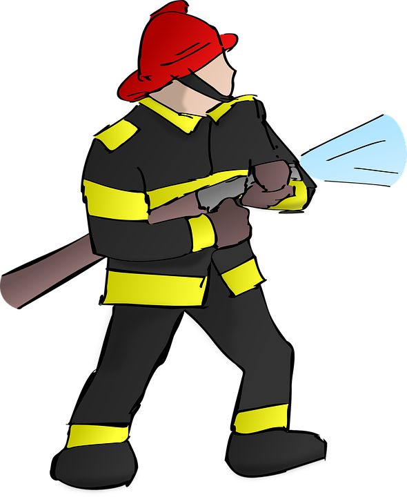

Alimentation, Etablissements, Extinction

Règles et Précautions d'Emploi pour l'Etablissement des Tuyaux
Les Etablissements de Lances et leur Utilisation
Les Engins d'Incendie et de Secours
Le Contrôle et le Reconditionnement
Les Vérifications Périodiques
La Combustion
Les Modes de Propagation
Le Comportement et la Réaction au Feu